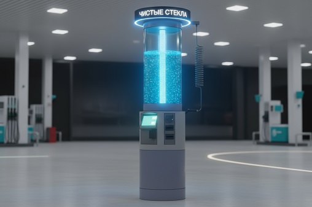

Второй прозрачный бак с LED‑подсветкой
«LED» — это «Двойной Микс», у которого второй бак сделан прозрачным и снабжён яркой LED‑подсветкой.
Жидкость в баке становится живой рекламой: видно цвет, уровень и движение.
- Прозрачный бак с подсветкой работает как витрина и вывеска одновременно.
- Цвет жидкости и сценарии света подчёркивают бренд и сезонность (лето/зима).
- Автомат заметен издалека даже на загруженной АЗС или тёмной парковке.
Для каких задач подходит «LED»
Этот аппарат выбирают там, где важна не только выручка, но и эффект присутствия бренда на локации.
- АЗС и крупные парковки, где нужно выделиться среди вывесок и подсветки конкурентов.
- Флагманские точки сети, где автомат — часть имиджа и витрины.
- Локации с плотным трафиком, где «цепляющий» внешний вид критичен для конверсии.
Почему прозрачный бак — сильный маркетинговый ход
- Водитель сразу видит живую жидкость, а не просто коробку с надписью — доверие выше, чем к безликой таре.
- Динамика подсветки и уровень в баке визуально показывают, что автомат активно используют.
- Можно синхронизировать цвет и сценарии подсветки с акциями, сезоном и фирменным стилем.
Что внутри: база «Двойного Микса»
По начинке «LED» — это тот же надёжный «Двойной Микс» с Пост‑Колонкой: один базовый бак с основой,
линии концентратов и смешивание прямо при наливе.
- Один базовый бак с основой + несколько концентратов — на выходе несколько рецептур и температур.
- Исполнение Пост‑Колонка: налив прямо в бачок и в тару (канистры/баклажки 5 л) из одного автомата.
- Гибкая настройка рецептур: крепость, сезонность, аромат, премиальные линейки.
- Учёт налива по каждой рецептуре и линии концентрата через IoT‑систему.
Способы оплаты
«LED» поддерживает и внутренний режим для автопарков, и коммерческую продажу для любых водителей.
- Внутренний режим: выдача по бонусному балансу с персональными лимитами, оплата по QR‑коду через СБП.
- Бесконтактная оплата: терминал NFC/EMV, оплата банковскими картами и телефонами.
- Наличные: купюроприёмник и монетоприёмник (по выбору комплектации).
Технические характеристики
- База управления: планшет/монитор 10″ с полноэкранным графическим интерфейсом, поддержкой бренд‑оформления, инструкций с картинками и акций.
- Расширенный контент: показ рекламы и анимаций в режиме ожидания для дополнительного дохода и маркетинга.
- Связь: LTE с сессиями HTTP(S), WebSocket, MQTT, gRPC, VPN‑туннелями, токенами и интеграцией через SDK платёжных сервисов; Wi‑Fi 2.4/5 ГГц.
- Платформа: LTE‑модем как «канал как в смартфоне» — полноценная платформа приложений с удалённым обновлением и мониторингом.
- Управление оборудованием: система управляет собственными узлами налива и дополнительными станциями/устройствами, в том числе климатом в боксе с электроникой.
- Оплата: бонусная система по QR‑коду с личными лимитами + возможность оплаты по QR через СБП.
- Питание: работа через ИБП с управлением — при пропадании сети аппарат корректно завершает операции и отключает ненужные модули.
- Режимы налива: налив по времени, давлению и температуре жидкости, с возможностью подогрева жидкости перед выдачей.
- Измерение остатка: точный остаток в баке по давлению с учётом расхода и температуры (фактический уровень, а не только «пусто/полно»).
- Система налива: управляемая схема с герконовым датчиком, датчиком давления и управлением насосом через реле контроллера.
- Подсветка: управляемая подсветка по расписанию с датчиком освещённости для экономии энергии и лучшей заметности автомата.
- Безопасность: концевой датчик и датчик вибрации в блоке, встроенная камера у монитора с онлайн‑доступом.
- Защита от замерзания: система защиты рукава и магистралей от промерзания.
- Подогрев бака: управляемый подогрев с логированием и возможностью добавления концентрата под нужную температуру и крепость.
- Система смешивания: расширенный ассортимент для клиента за счёт работы с разными рецептурами и концентрациями.
- Автоматический рукав: управление подачей и возвратом рукава с контролем правильного хранения.
- Энергоэффективность: контроль энергопотребления и состояния основных узлов оборудования.
Окупаемость и сценарии использования
За счёт заметности «LED» даёт больше спонтанных покупок и лучше отрабатывает премиальные рецептуры.
- Притягивает трафик с проезжей части и соседних парковочных рядов.
- Отдельно выделяет «фирменную» жидкость в прозрачном баке (премиум/акционная линейка).
- Работает как рекламный носитель бренда и точки в тёмное время суток.
Стоимость автомата «LED»
Базовая комплектация автомата серии «LED» (исполнение Пост‑Колонка с прозрачным подсвеченным баком)
начинается от 400 000 ₽.
| Комплектация |
Что входит |
Цена от |
| «LED‑Микс» базовый |
«Двойной Микс» Пост‑Колонка + второй прозрачный бак с LED‑подсветкой |
400 000 ₽ |
Дополнительные опции
- Расширенные сценарии подсветки и синхронизация с акциями.
- Бесконтактная оплата: терминал NFC/EMV, оплата картами и телефонами — от 10 000 ₽.
- Купюро‑монетоприёмник с функцией сдачи — от 32 850 ₽.
- Бегущая строка P10, локальное программирование, многоцветная — от 16 838 ₽.
- Бегущая строка P10, локальное программирование, одноцветная — от 8 949 ₽.
Частые вопросы по серии «LED»
Чем «LED‑Микс» отличается от обычного «Двойного Микса»?
Это тот же «Двойной Микс» в исполнении Пост‑Колонка, но со вторым прозрачным баком с LED‑подсветкой,
который делает автомат гораздо более заметным.
Что можно наливать во второй прозрачный бак?
Обычно туда выводят флагманскую или акционную жидкость: премиальную, с особым цветом или ароматом,
чтобы подчеркнуть её визуально.
Подсветка всегда горит или можно настраивать режимы?
Режимы подсветки настраиваются: можно задать расписание, статичный цвет или динамику под сезон и акции.
Обсудить проект и комплектацию
Оставьте контакты — подберем конфигурацию автомата «LED‑Микс» под вашу локацию,
трафик и требования к бренду и маркетингу.